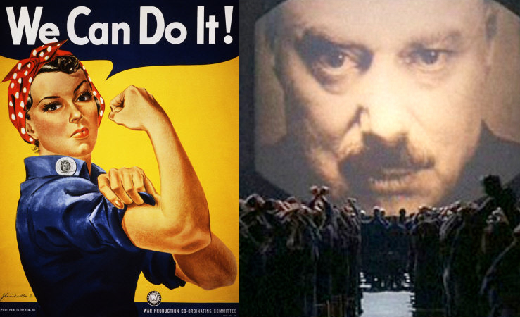
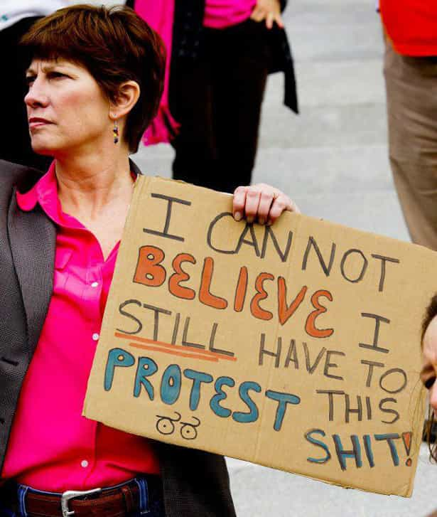

< < < Back
Is Return Of Kings Really The Most Repugnant Website On The Internet? – Return Of Kings
For those of you who have even a modicum of intelligence, common sense or just plain old perspective, you needn’t read this article. This article is aimed at… nay, dedicated, to the men and women who compulsively read our site so they can turn around to say how utterly despicable we are. The age old wisdom of “If you don’t like the show, just change the channel” apparently does not apply to these people, our ‘haters’ if you would. So if you aren’t an idiot, if you aren’t a selfish cretin, if you aren’t a terrible human being, you need not read further. You already realize the absurdity of us being considered one of the worst websites on the internet.
We here at Return Of Kings get a lot of hate. Those with twitter feeds especially are subject to much ridiculing and out and out bullying. Of course, those disparaging against us would never in a million years consider themselves bullies, since they’re such good souls that they’re clearly above such things… even as they accuse us of being loveless losers, of being rapists, of being molested or bullied as children with that last implication used in an insulting, not sympathetic, manner. Many contributors encounter something like this on a regular basis from those self proclaimed ‘good’ people:
“HA HA YOU PROBABLY GOT RAPED AND BEAT UP AS A KID LOL THAT’S WHY YOU TRY TO FORM RELATIONSHIPS WITH WOMEN 😀 GO KILL YOURSELF”
At their heart, sites focused on game and other masculine centered topics—a poorly named collective largely known as the manosphere—have essentially one goal in mind; to make men’s lives better. And for that simple, humanistic goal we receive a lot of hate. On game sites where men try to impart other men with wisdom about how women act in the dating world, on how best to attract women, numerous comments from feminists and their beta manslaves permeate the comment sections, leveling accusations of those who practice game as rapists.
They say that we’re pathetic; which admittedly, we are. We spend hundreds if not thousands of hours trying to increase our sexual appeal to women, learning how to best utilize our looks, learning how women think and how best to make a pleasing impression upon their minds. In short, we who practice game dedicate a good portion of our limited time on this Earth trying to please women, which really is pathetic compared to what a woman has to do to ‘game’ men; essentially just be thin and show up. And we men do not complain (loudly) about this disparity. We willingly rise up to the challenge because we love women. And somehow that makes us monsters.
Other then discussing how great it is to be with a woman, sometimes us manosphere types like to discuss other topics relating to men in the modern west. We share a common abhorrence and repugnance at how men can robbed of their entire lives in divorce courts, even when women initiate it, or how men almost never get to raise their children afterward even if the mother is a selfish beast who brings dangerous men into her children’s lives. We discuss how bizarre utopian policies like homosexual normalization or unchecked multiculturalism have always destroyed societies rather then progressed them. In other words, we discuss the truths of the world, without lies or politically correct thought police censorship.

And for that we are apparently the worst site on the web. The utter irony of that tends not to sink in to the hate mongering feminists, beta manslaves and other parties who proclaim us to be monsters. It is classical propaganda misdirection.
Yet think about what the internet is. It is everything. Literally every type of person, every personality type both good and bad, is represented on the internet. It is statistically impossible that game and manosphere websites even rank in the top 10,000 of the worst thing on the internet, and dammit that sucks considering how much effort we put in to being as controversial as possible. Need some examples of worse spheres in the online world?
Urban Dictionary’s top description of Not Safe For Life (NSFL) is;
“Not Safe For Life. Goes a step beyond NSFW, because it doesn’t matter where you view the material; you will be scarred.”
**DO NOT GOOGLE ANY OF THE FOLLOWING EXAMPLES. TAKE OUR WORD FOR IT. THESE THINGS EXIST. THE EXAMPLES ARE NSFL**
Death Porn
It is impossible to understand how we are the worst website when sites dedicated to pornography like Vore and Guro exist. Vore is sexual imagery of people being eaten; a woman wearing lingerie being devoured by a giant snake would be considered Vore porn. A man with an erection being eaten by wolves is Vore porn. Guro, on the other hand, is sexual imagery where the man or (and far more commonly depicted) woman is being mutilated, murdered, massacred and otherwise killed. It goes beyond the concept of snuff films; these are acts of horror created not to satisfy an urge to see someone die, but to see someone die and have the viewer be AROUSED by it. There are no masculine focused sites that cater to such disgusting imagery, and this is undoubtedly one of the first articles of any in this corner of the web where the words Vore and Guro are mentioned.
And these two genres do not cater to a small, niche market in some dark soulless corner of the internet. This porn is wide spread. There are tens of thousands of images in existence to cater to the disturbingly large amount of people who eagerly masturbate to these images. There are hundreds if not thousands of forums and sites created solely to cater to these people. There are many, many more pornographic sites that are not exclusively dedicated to showing these images, but have them available for anyone who wants to see them. Even youtube has slide shows and videos of these acts.
If I posted a response video to some feminist, talking about how her idea that all men should have some of their semen forcefully taken from them is not only barbaric but a crime against nature, it would be deleted within the hour for violating youtube’s terms of, like, making her feel uncomfortable or something. If I posted a video showing drawn images of a man cutting a woman’s breasts off, then feeding her to a Komodo dragon, it would stay up for years and have thousands of views from people masturbating to it.
A little while back, a video of an attractive Asian woman abusing and murdering bunnies and kittens made the rounds on numerous social media services, including Facebook, where it wasn’t removed for at least two weeks. Our Facebook page is suspended on a regular basis. Our current suspension came about because a plastic dildo was in the one of the article’s pictures. A real life video featuring bunny murder and a plastic sex tool; which of those two things sounds worse to you?
Death Sites
Then there are site’s whose sole function is to display pictures of real death for people, whatever their motivations, to gawk at. The big one when I was a kid was called Rotten. Our school’s computers blocked pretty much every known porn site but death sites were readily available. You weren’t allowed to watch Tory Lane consentingly pleasure herself with a big ol’ dildo, but it was perfectly fine to look at Chris Farley’s bloated corpse or see the aftermath of what happens when a hungry bear meets a happy camper.
“HEY BOOBOO! Watch-a me eat this, hitch-a-hiker!”
You can watch videos of American troops being hacked apart, blown up, or being shot by snipers but no, let’s get outraged about the site which says girls who have short hair are damaged. Really, the fact that our opponents are angrier at Return Of Kings than Juba the sniper says a lot about their morality.
Rape Sites
There are forums for rapists. They hide behind cutesy names or require a logon but they are easily found. There are disclaimers by the administrators saying that the forums and sites are purely for ‘fantasy’, and within these forums people ‘fantasize’ about how best to rape women. They discuss methods on how to physically abduct women, on how to break down their will and make them into sex slaves. They write long, passionate soliloquies about how fulfilled they are by forcing themselves on top of helpless women. Many people think the worst form of rape is when a woman gets drunk and has a regretful one night stand. The uncensored thoughts of the people on rape sites would dispel all notions of that quaint belief. Ted Bundy was a demon, and there are a hundred ones like him at this very moment giving each other tips online about what street in which city has poor lighting, the blind spots of any cameras on them and which routes they notice girls walk most frequently.
Cannibal Cafes
There are sites for cannibals. For those of you who, up to this point, think this article is exaggerating a safe search for you to do is to look up Armin Meiwes on Wikipedia. This man posted on a ‘fantasy’ site dedicated to cannibalism, found a mentally disturbed man and then ate the disturbed man. At least Marilyn Manson got an album out of it. Who knows how many other scenarios like Meiwes have played out, thanks to the internet, that we will never hear about?
Paedophiles
See that adorable little guy above us? Odds are you’ve seen him before. That’s Pedobear. Cute idn’e? He’s the mascot for paedophiles on the internet. All though Pedobear started as a joke, the people he represents most certainly at not. There is a massive, pervasive amount of paedophiles who exist online. Their existence isn’t even a scare tactic like Rainbow parties or other such nonsense—online paedophiles are one of the great blights modern civilization has produced. Though most paedophile sites and forums are heavily guarded, since they’re one of the groups who deserve to be hunted down that actually are, there are numerous soft sites that feature only drawn or computer generated images of young girls and boys being molested. Somehow these get through legal loopholes, but despite the social stigma of child pornography, Loli (short for Lolita) porn is thriving and its fans are numerous. It’s almost a certainty that you know someone who has or continues to masturbate to it.

Those are just a few examples of the thousands of grotesque groups that thrive on the internet. And yet when we try to warn naïve, inexperienced young men that a woman with a tattoo or piercings in places other then her ear has undoubtedly had at least five different penises in her, and to safe guard his heart and love from that slut, we’re proclaimed to be the biggest monsters online. When we try to tell women who may not want to give their bodies up to several different men that the slut shame they feel is normal, proper and warranted, and that their sisters who do give it up en masse are damaged goods worthy of only one night stands, we’re the height of evil.
The claims against us, like many of causes of Social Justice Warriors, are grounded in two things; lack of perspective and laziness. They complain about Return Of Kings because it’s easy and gives them instant gratification. When they share our articles amongst each other, nodding their chubby chins in fierce agreement about how evil we are for not wanting to work for a female boss, they feel good. They feel like they’ve done something, even though in reality they’ve done nothing at all except preach to their own idiot choir. In their safe, self centered white bread world, men who assert their manliness are the ultimate evil. They’ve never had to stare evil in the face, even though it’s less then 20 characters and a Google search away.
This site, and the manosphere in general, are not even close to the worst thing online. In fact, instead of going around online looking for things to get offended at, how about you Social Justice Warriors back up your self righteousness with a real feminist cause? Forget #bringbackourgirls and Boko Haram. The United States State Department estimates that 50,000–100,000 women and girls are trafficked into the US each year for sex slavery. Even if the real number is much smaller, there are still a significant amount of women who desperately need help in your country. Think one of them might appreciate a self appointed crusader? Y’all ain’t no excuse that they’re all the way over there in Africa. These girls are in your neighbourhood. Stop writing your witty rebuttal in the comments, go to the house next door and see if Michelle Knight might need some help before filing a complaint against Return Of Kings with whatever thought police organization you have bookmarked.
The day that we’re the worst site on the internet would be a good day. It’s also a day that will never come. There are a lot worse things on the internet then male pride and misogyny lite. The world outside our bubbles is a dark and scary place. Our haters should be thankful that there are still some men around who put up with their misguided hate mongering while trying to create more men who can protect them from the bad stuff out there.
Read More: Every Woman Adores A Fascist


{kind=link}
{kind=link}
{kind=link}
{kind=link}
{kind=link}
{kind=link}